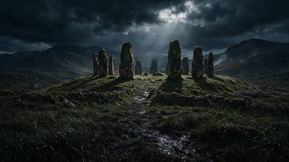
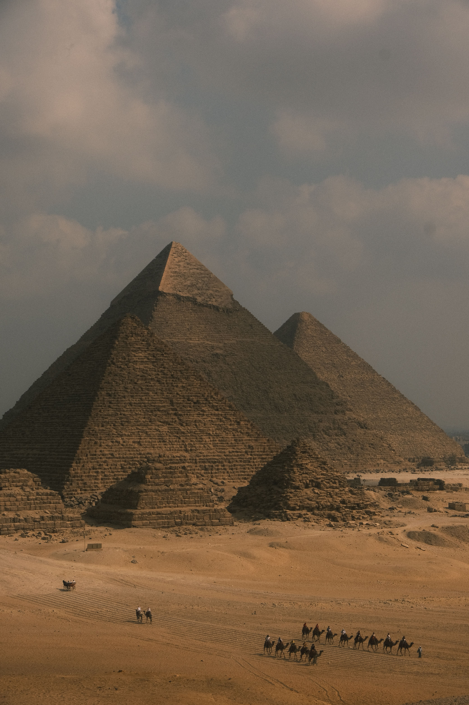
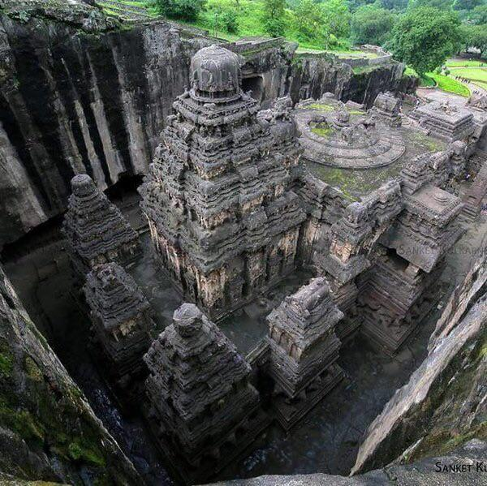

Explore the World of Ancient Legends
Discover ancient civilizations, mythical creatures, legendary gods, and myasterious stories from around the world.

Welcome to Mythic Archives, a digital encyclopedia dedicated to the fascinating world of ancient mythology.
Travel through time and discover the stories that shaped civilizations. Explore the mysterious and magical world of legends.
Every legend has a story waiting to be discovered!
Exxplore some of the most famous civilizations that existed thousands of years ago.

Ancient Egypt is famous for its pyramids, pharaohs, temples, and mysterious hieroglyphics.
Ancient Greece introduced many famous myths about gods, heroes, and legendary creatures.
Ancient Rome is known for its powerful empire, grand architecture, and legendary history.

Indian mythology contains many fascinating stories about gods, heroes, and epic battles.
Mythical creatures are legendary beings found in stories from different cultures.
A legendary creature often described as a giant reptile with wings.
A mythical bird associated with fire and rebirth.
The ancient Egyptians worshipped many gods and goddesses.
Water is represented by the chemical formula H2O.
The sun is approximately 1.5 x 108 kilometers from Earth.
Note: Mythological stories are traditional cultural narratives and are not necessarily historical facts.
Watch videos related to ancient civilizations and mythology.
Listen to peaceful sounds while exploring the world of ancient legends.